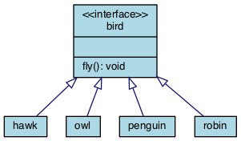
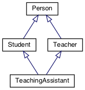

13.4. Inheritance¶
Inheritance enables new classes to receive — or inherit — the properties and methods of existing classes. Inheritance is a programming strategy used to increase the flexibility of your objects. In particular, inheritance is not a code reuse strategy. The purpose of inheritance in C++ is to express interface compliance (creating a subtype), not to reuse code. In C++, code reuse usually comes via composition rather than via inheritance. In other words, inheritance is mainly a specification technique rather than an implementation technique.
New programmers are generally eager to “do things the OO way” and tend to overuse inheritance relationships. This is especially true if starting with UML diagrams: many diagram look ‘too simple’ without a lot of boxes connected by generalization relations.
Guideline
Prefer composition over inheritance.
Consider the following classes.
No.
We have asserted that a penguin can fly.
We might choose to implement fly() in our penguin class
and simply do nothing,
but generally when we do that we are coing our way around a
basic design problem.
It is very important when creating a class hierarchy using inheritance that every derived class passes the is a test for all of its bases. For example:
struct oven: public kitchen { . . . };
This is not a proper relationship.
An oven is a thing commonly found in a kitchen,
but that does not mean an oven is a kitchen.
Because it fails this basic test,
it is likely that variables and functions that apply to the base:
cupboards, sink, enter_room(), etc
will fail to make sense when applied to the derived class.
This is an example better modelled through composition. A kitchen has a sink in it.
13.4.1. When to use inheritance¶
Adapted from Composition vs. Inheritance: How to Choose?.
The most common — and beneficial — use of inheritance is to incrementally extend types. If we need a widget that is just like an existing Widget class, but with a few tweaks and enhancements, then inheritance is suitable. Inheritance is the right choice because our derived class is still a widget. We want to reuse the entire interface and implementation from the base class and our changes are primarily additive. That is, the derived class adds capabilities to base. If you find that a derived class is removing things provided by the base class, then question inheriting from that base.
Inheritance is most useful for grouping related sets of concepts, identifying families of classes, and in general organizing the names and concepts that describe the domain. As we delve deeper into the implementation of a system, we may find that our original generalizations about the domain concepts, captured in our inheritance hierarchies, are incorrect. Don’t be afraid to disassemble inheritance hierarchies into sets of complementary cooperating interfaces and components when the code leads you in that direction.
There is no substitute for object modeling and critical design thinking. But if you must have some guidelines, consider these.
Inheritance should only be used when:
- Both classes are in the same logical domain
- The derived class is a proper subtype of the base class: think is a
- The base class implementation is necessary or appropriate for the derived class
- The enhancements made by the derived class are primarily additive
13.4.2. Private inheritance¶
The default inheritiance model in C++ is priavte inheritance. In private inheritance all of the base class members: data and functions, public, protected, and private, are treated as private members of the derived class.
A common question is “Why would we ever do this?”
If a derived class wants to reuse all of the code from a base class, but not conform to the interface, then private inheritance is how to achieve that.
13.4.3. Non-virtual base class functions¶
Every non-virtual base class function defines a mandatory interface for all derived classes. The language allows a derived class to implement its own version. For example:
struct B {
void foo();
};
struct D: public B {
void foo(); // derived class D has its own version
};
If class D implements its own version of foo,
then this is not an override.
This is called shadowing and is often a bug.
The problem is this:
An instance of
Bwill always callB::foo()An instance of
Dwill always callD::foo()An instance of
Din a container of pointers toBwill callB::foo().New programmers are often caught off guard by this behavior.
Most modern compilers will warn about this.
Even if the programmer is careful to ensure the contract defined
by B::foo() is also met by struct D,
there is no guarantee this can’t change in the future.
There is no way to know what else may depend on the contract
defined by B::foo or any if its invariants.
In general, if a derived class can’t use the existing mandatory interface defined by a base class, then it probably shouldn’t be a derived class.
13.4.4. Multiple inheritance¶
C++ allows for a single class to inherit capabilities from more than 1 class. The constructors of inherited classes are called in the same order in which they are inherited. For example, in the following program, B’s constructor is called before A’s constructor.
The destructors are called in reverse order of constructors.
The Diamond of Death
Since C++ allows multiple inheritance, the following relationships are valid:
The TeachingAssistant class is both a Teacher and a Student
and inherits two copies of the Person base class data.
When a TA is created, the Person constructor is called twice.
Once for each copy of the Person stored.
This is both wasteful and creates ambiguities.
The C++ solution to this problem is to inherit virtual base classes. For each distinct base class that is specified virtual, the most derived object contains only one base class subobject of that type, even if the class appears many times in the inheritance hierarchy (as long as it is inherited virtual every time). For example:
This solves the ‘multiple grandparent problem’ for the teaching assistant class, but note that the default Person constructor is called. If the name is stored in the Person class, then we need to call the non-default constructor.
The Person(string) constructor can be explicitly called in the
TeachingAssistant initializer.
In order for Faculty and Student to initialize correctly,
the Person class must be constructed first:
explicit
TeachingAssistant(string n)
: Person(n), Faculty(n), Student(n) { . . . }
Try This!
Change the TA signature in the previous active code example to call the 1 argument Person constructor.
What about the situation where Person defines a virtual function,
which is overridden by Faculty and Student?
Which version of the function is invoked?
There is no way to know. Technically, any version could be called. The standard doesn’t specify anything in this situation Most compilers will essentially bail and not call any of the functions.
The TA class can resolve the ambiguity by explicitly calling a specific base class function. The derived class must call the fully qualified name of the function like this:
TeachingAssistant::foo() {
if (weekday) {
Faculty::foo();
} else {
Student::foo();
}
}
There is no obligation to always call all implementing function, but in practice, this is often needed.
Note that this defeats the entire purpose of having runtime polymorphism. This is partly why the diamond is considered ‘deadly’.
More to Explore
- Ineritance basics from the C++ FAQ
- Effective C++ #35: Make sure public inheritance models “IS-A”
- Effective C++ #36: Never redefine inherited non-virtual functions
- Composition vs. Inheritance: How to Choose?